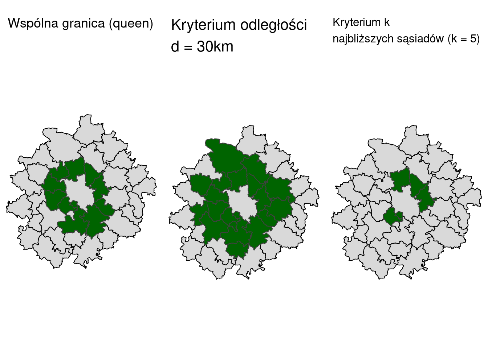

library(sf)
library(tmap)
library(spdep)8 Określanie sąsiedztwa danych obszarowych
Dane obszarowe (ang. areal data) powstają poprzez podzielenie obszaru badań na jednostki przestrzenne, w których agregowane są wyniki, np. podział na jednostki administracyjne (gminy, powiaty). Dane obszarowe charakteryzują się skokową zmiennością wartości. Przykładami danych obszarowych są np. dane społeczno-ekonomiczne udostępniane w ramach spisów ludności (np. poziom bezrobocia wg powiatów).
Koncepcja sąsiedztwa przestrzennego jest przydatna do eksploracji danych obszarowych w celu oceny autokorelacji przestrzennej i sprawdzenia, czy obszary bliskie mają podobne, czy różne wartości.
8.1 Kryteria wyznaczania sąsiedztwa
Sąsiadów przestrzennych można definiować na kilka sposobów.
8.1.1 Kryterium wspólnej granicy obszarów (adjacency)
Kryterium wspólnej granicy obszarów (adjacency) zakłada, że sąsiedzi to obszary, które mają wspólną granincę. Wspólną granicę obszarów można wyznaczyć posługując się regułą Rook lub Queen
8.1.2 Kryterium odległości
Kryterium odległości (odległość mierzona między centroidami obszarów) zakłada, że sąsiedzi to obszary znajdujące się w pewnej odległości od siebie, ale niekoniecznie sąsiadujące. Wyróżnia się:
macierz sąsiadów w promieniu d* km* - sąsiadem będzie obiekt, którego środek jest oddalony w linii prostej o nie więcej niż d km
k najbliższych sąsiadów (knn) - najbliższy sąsiad to obszar którego środek leży najbliżej środka danego obszaru stosując odległość euklidesową.
- tworzona dla danych punktowych
- używając danych obszarowych należy najpierw wyznaczyć ich centroidy
- na liczbę najbliższych sąsiadów ma zatem wpływ wielkość oraz kształt regionu i regionów sąsiednich
odległość odwrotna (\(\frac{1}{d}\))

8.2 Macierz wag przestrzennych
Macierz wag przestrzennych przedstawiana jest w formie tabeli, w której przechowywane są informacje o występowaniu oraz sile zależności przestrzennych między obiektami (np. jednostkami administracyjnymi). Każdy element macierzy reprezentuje powiązanie między parą obszarów. Macierz wag przestrzennych stanowi podstawę wielu technik analizy przestrzennej, w tym autokorelacji przestrzennej, grupowania przestrzennego i regresji przestrzennej.
Macierz wag przestrzennych tworzona jest w dwóch krokach:
- utworzenie macierzy sąsiedztwa
- standaryzacja macierzy sąsiedztwa w celu otrzymania wag.
8.2.1 Macierz sąsiedztwa
Mając definicję sąsiedztwa przestrzennego, możemy skonstruować macierz sąsiedztwa przestrzennego - tabelę, w której przechowywane są informacje o występowaniu (lub nie) relacji między obszarami (czy obszary ze sobą sąsiadują?). Najprostszą formą macierzy sąsiedztwa jest macierz binarna.
\[ \begin{cases} 1 & \text{obiekt i jest sąsiadem obiektu j (mają wspólną granicę)} \\ 0 & \text{obiekt i nie jest sąsiadem obiektu j (nie mają wspólnej granicy)} \\ 0 & \text{elementy diagonalne macierzy} \\ \end{cases} \]
8.2.2 Standaryzacja macierzy sąsiedztwa
W kolejnym kroku standaryzuje się macierz sąsiedztwa w celu otrzymania wag przestrzennych. Najczęściej stosowaną standaryzacją jest standaryzacja wierszami do jedynki tak aby suma wag w każdym wierszu była równa 1:
\[ w_{ij} = { m_{ij} \over w_i} \]
\(m_{ij}\) - wartość macierzy sąsiedztwa dla obiektu i oraz j, \(w_i\) jest sumą wiersza.
8.3 Macierze wag przestrzennych w R
Do utworzenia macierzy wag przestrzennych wykorzystuje się w R funkcje z pakietu spdep.
Dwie główne klasy z pakietu spdep:
- klasa
"nb"- lista sąsiadów - klasa
"listw"- lista sąsiadów z wagami przestrzennymi dla wybranego schematu.
Możliwe jest przekształcenie tych klas w inne klasy i z powrotem, np:
nb2mat()- funkcja generuje macierz wag przestrzennych dla listy sąsiadów dla dowolnego schematu kodowania wag.nb2listw()- funkcja uzupełnia listę sąsiadów o wartości wag wygenerowane dla dowolnego schematu kodowania.listw2mat()- funkcja przekształca listę sąsiadów z przypisanymi wagami w macierz.
Macierz sąsiedztwa, w zależności od wybranego kryterium tworzona jest z wykorzystaniem następujących funkcji:
- Na podstawie sąsiedztwa wyznaczanego przez wspólną granicę (funkcja
poly2nb(),nb2listw()) - Na podstawie odległości (funkcja
dnearneigh()) - Metoda k-najbliższych sąsiadów (funkcja
knearneigh()) - Macierze sąsiedztwa dostarczone przez użytkownika (np. przy użyciu funkcji
mat2listw()) - Odwrotność odległości
8.4 Przykład 1: Kryterium sąsiedztwa - wspólna granica
Tworzenie macierzy wag przestrzennych na podstawie kryterium wspólnej granicy wymaga wykonania w R 3 kroków:
- utworzenia listy sąsiadów (
poly2nb()) - utworzenia listy zawierającej wagi (
nb2listw) - przekształcenia listy w macierz wag przestrzennych (
listw2mat())
8.4.1 Dane
#wczytanie danych
library(sf)
ex = read_sf("data/area_ex.gpkg")
rownames(ex) <- ex$id
ex = ex[order(rownames(ex)),]
st_crs(ex) <- 2180#wyswietlenie danych
tm_shape(ex) +
tm_polygons(col = "grey", legend.show = FALSE) +
tm_text("id", size = 2)8.4.2 Utworzenie macierzy wag przestrzennych
- Tworzenie listy sąsiadów
Lista sąsiadów tworzona jest z wykorzystaniem funkcji poly2nb(). Funkcja ta tworzy listę sąsiadów na podstawie obiektu poligonowego wczytanego lub utworzonego za pomocą biblioteki sf. Pozwala ona na zdefiniowanie czy lista sąsiadów ma być tworzona z wykorzystaniem reguły Rook (opcja queen = FALSE) czy reguły Queen (queen = TRUE)
ex_nb = poly2nb(ex, queen = FALSE)
ex_nbNeighbour list object:
Number of regions: 6
Number of nonzero links: 12
Percentage nonzero weights: 33.33333
Average number of links: 2 W wyniku otrzymamy listę sąsiadów dla każdego z obszarów. Poniższa lista składa się z 6 elementów (mamy 6 obszarów w zbiorze danych). Każdy element oznacza sąsiadów dla danego obszaru (np. obszar 1 wg reguły Rook ma dwóch sąsiadów: obszar nr 2 oraz obszar nr 4).
str(ex_nb)List of 6
$ : int [1:2] 2 4
$ : int [1:3] 1 3 5
$ : int [1:2] 2 6
$ : int [1:2] 1 5
$ : int [1:2] 2 4
$ : int 3
- attr(*, "class")= chr "nb"
- attr(*, "region.id")= chr [1:6] "1" "2" "3" "4" ...
- attr(*, "call")= language poly2nb(pl = ex, queen = FALSE)
- attr(*, "type")= chr "rook"
- attr(*, "snap")= num 0.01
- attr(*, "sym")= logi TRUE
- attr(*, "ncomp")=List of 2
..$ nc : int 1
..$ comp.id: int [1:6] 1 1 1 1 1 1- Tworzenie macierzy sąsiedztwa
Funkcja nb2listw() uzupełnia listę sąsiadów o wagi przestrzenne dla wybranego schematu kodowania (patrz opcje dla argumentu style) style = "B" oznacza, że chcemy utworzyć macierz binarną.
ex_lw = nb2listw(ex_nb, style = "B")
ex_lwCharacteristics of weights list object:
Neighbour list object:
Number of regions: 6
Number of nonzero links: 12
Percentage nonzero weights: 33.33333
Average number of links: 2
Weights style: B
Weights constants summary:
n nn S0 S1 S2
B 6 36 12 24 104Funkcja listsw2mat() przekształca listę na macierz. W wyniku otrzymamy macierz binarną, gdzie 1 oznacza, że obiekty ze sobą sąsiadują, a 0 oznacza brak sąsiedztwa między obszarami
ex_mat = listw2mat(ex_lw)
ex_mat 1 2 3 4 5 6
1 0 1 0 1 0 0
2 1 0 1 0 1 0
3 0 1 0 0 0 1
4 1 0 0 0 1 0
5 0 1 0 1 0 0
6 0 0 1 0 0 0- Tworzenie macierzy wag przestrzennych
Argument style = "W" tworzy macierz wag przestrzennych, gdzie wagi są standaryzowane wierszami (wagi w każdym wierszu sumują się do 1).
ex_lwp = nb2listw(ex_nb, style = "W")
ex_mat_wp = listw2mat(ex_lwp)
ex_mat_wp 1 2 3 4 5 6
1 0.0000000 0.5 0.0000000 0.5 0.0000000 0.0
2 0.3333333 0.0 0.3333333 0.0 0.3333333 0.0
3 0.0000000 0.5 0.0000000 0.0 0.0000000 0.5
4 0.5000000 0.0 0.0000000 0.0 0.5000000 0.0
5 0.0000000 0.5 0.0000000 0.5 0.0000000 0.0
6 0.0000000 0.0 1.0000000 0.0 0.0000000 0.0Utwórz macierz sąsiedztwa oraz macierz wag przestrzennych dla sąsiedztwa poligonów wyznaczonego regułą Queen.
8.5 Przykład 2: Sąsiedztwo obszarów - powiaty województwa wielkopolskiego
8.5.1 Dane
powiaty = read_sf("data/wlkp_powiaty.gpkg")
tm_shape(powiaty) + tm_polygons(fill = "grey", col = "black")8.5.2 Sąsiedztwo: krytetium wspólnej granicy
W poniższym przykładzie dla każdego z powiatów w województwie wielkopolskim wyznaczono sąsiadów posługując się kryterium wspólnej granicy (określonej poprzez regułę Queen)
#lista sąsiadów
powiaty_nb_q = poly2nb(powiaty, queen = TRUE, row.names = as.character(powiaty$Nazwa))
#macierz binarna, aby otrzymać macierz standaryzowaną wierszami należy podac style = "W"
powiaty_lw = nb2listw(powiaty_nb_q, style = "B")
powiaty_mat = listw2mat(powiaty_lw)
colnames(powiaty_mat) <- as.character(powiaty$Nazwa)Macierz sąsiedztwa powiatów w województwie wielkopolskim
powiaty_mat[1:5, 1:5] chodzieski czarnkowsko-trzcianecki gnieźnieński
chodzieski 0 1 0
czarnkowsko-trzcianecki 1 0 0
gnieźnieński 0 0 0
gostyński 0 0 0
grodziski 0 0 0
gostyński grodziski
chodzieski 0 0
czarnkowsko-trzcianecki 0 0
gnieźnieński 0 0
gostyński 0 0
grodziski 0 0Poniższy kod pozwala na wypisanie sąsiadów dla danego powiatu
powiat_nazwy = as.character(powiaty$Nazwa)
powiat_nazwy[powiaty_nb_q[[which(powiat_nazwy=="poznański")]]] [1] "gnieźnieński" "grodziski" "kościański" "nowotomyski" "obornicki"
[6] "Poznań" "szamotulski" "średzki" "śremski" "wągrowiecki"
[11] "wrzesiński" Z jakimi powiatami graniczy powiat koniński?
Z jakimi powiatami graniczy powiat pilski?
Wizualizacja macierzy sąsiedztwa
#wyznaczenie centroidów dla powiatów
powiaty_cen = st_centroid(st_geometry(powiaty), of_largest_polygon = FALSE)
#konwersja listy sąsiadów na obiekt liniowy (linie łączące sąsiadujące powiaty)
powiaty_nb_net = st_as_sf(nb2lines(powiaty_nb_q, coords = st_coordinates(powiaty_cen)))Warning in CRS(proj4string): CRS: projargs should not be NULL; set to NAst_crs(powiaty_nb_net)<- 2180
#wizualizacja
tm_shape(powiaty) + tm_polygons() +
tm_shape(powiaty_nb_net) + tm_lines() + tm_shape(powiaty_cen) + tm_dots(size =0.6 , col = "black")8.5.3 Sąsiedztwo: krytetium odległości
- odległość między obszarami jest mierzona między centroidami obszarów.
- sąsiadem będzie obiekt, którego środek jest oddalony w linii prostej o nie więcej niż d km.
Analiza odległości centroidami sąsiadujących powiatów
#centroidy powiatów
powiaty_cen = st_centroid(st_geometry(powiaty), of_largest_polygon = FALSE)
#lista sąsiadów wg kryterium sąsiedztwa
powiaty_nb_q = poly2nb(powiaty, queen = TRUE, row.names = as.character(powiaty$Nazwa))
#obliczenie odległosci między sąsiadami, obiekt powiaty_dists zwraca odległosc euklidesową między centroidami sąsiadujących powiatów
powiaty_dists = nbdists(powiaty_nb_q, powiaty_cen)
head(powiaty_dists, 2)[[1]]
[1] 42356.78 30099.31 22127.30 25311.28
[[2]]
[1] 42356.78 41310.84 39130.37 48353.71 34813.16powiaty_dists_vec = unlist(powiaty_dists)Poniższy histogram pokazuje rozkład odległości między centroidami sąsiadujących powiatów.
hist(powiaty_dists_vec)Poniżej obliczone zostały statystyki opisowe dla odległości euklidesowej między centroidami sąsiadujących powiatów.
summary(powiaty_dists_vec) Min. 1st Qu. Median Mean 3rd Qu. Max.
2063 24892 31809 31915 37644 54911 Macierz sąsiedztwa na podstawie kryterium odległości
Funkcja dnearneigh() identyfikuje sąsiadów na podstawie zadanej odległości. W poniższym przykładzie za sąsiadów zostaną uznane powiaty, których centroidy w linii prostej (odległość euklidesowa) są od siebie oddalone o 0 do 30000 m.
powiaty_nb_d = dnearneigh(powiaty_cen, d1 = 0, d2 = 30000, longlat = FALSE, row.names = as.character(powiaty$Nazwa))Warning in dnearneigh(powiaty_cen, d1 = 0, d2 = 30000, longlat = FALSE, :
dnearneigh: longlat argument overrides objectWarning in dnearneigh(powiaty_cen, d1 = 0, d2 = 30000, longlat = FALSE, :
neighbour object has 8 sub-graphspowiaty_nb_dNeighbour list object:
Number of regions: 35
Number of nonzero links: 64
Percentage nonzero weights: 5.22449
Average number of links: 1.828571
5 regions with no links:
czarnkowsko-trzcianecki, gnieźnieński, kolski, obornicki, turecki
8 disjoint connected subgraphspowiaty_mat2 = nb2mat(powiaty_nb_d, zero.policy = TRUE)
colnames(powiaty_mat2) <- as.character(powiaty$Nazwa)
powiaty_mat2[1:5, 1:5] chodzieski czarnkowsko-trzcianecki gnieźnieński
chodzieski 0 0 0
czarnkowsko-trzcianecki 0 0 0
gnieźnieński 0 0 0
gostyński 0 0 0
grodziski 0 0 0
gostyński grodziski
chodzieski 0 0
czarnkowsko-trzcianecki 0 0
gnieźnieński 0 0
gostyński 0 0
grodziski 0 0Wizualizacja sąsiedztwa
- Wizualizacja sąsiedztwa używając funkcji
plot()
plot(st_geometry(powiaty), border = "grey", lwd = 1.5, cex = 3)
plot(powiaty_nb_d, coords = st_coordinates(powiaty_cen), add = TRUE, lwd = 1.5)- Wizualizacja sąsiedztwa używając pakietu
tmap()
#przekształcenie obiektu klasy nb na obiekt klasy sf
powiaty_nb_d_net = st_as_sf(nb2lines(powiaty_nb_d, coords = st_coordinates(powiaty_cen)))
st_crs(powiaty_nb_d_net)<- 2180
#wizualizacja
tm_shape(powiaty) + tm_polygons() +
tm_shape(powiaty_nb_d_net) + tm_lines() + tm_shape(powiaty_cen) + tm_dots(size =0.6 , col = "black")Poniższy kod pozwala na wypisanie sąsiadów dla danego powiatu.
- Jakie powiaty sąsiadują z powiatem Poznań?
powiat_nazwy = as.character(powiaty$Nazwa)
powiat_nazwy[powiaty_nb_d[[which(powiat_nazwy=="Poznań")]]][1] "poznański"- Jakie powiaty sąsiadują z powiatem Kalisz?
powiat_nazwy[powiaty_nb_d[[which(powiat_nazwy=="Kalisz")]]][1] "kaliski" "ostrowski" "pleszewski"Jakie powiaty sąsiadują z powiatem konińskim biorąc pod uwagę kryterium odległości (30km)?
8.5.4 Sąsiedztwo: k-najbliższych sąsiadów
tworzona dla danych punktowych
używając danych obszarowych należy najpierw wyznaczyć ich centroidy
najbliższy sąsiad to obszar którego środek leży najbliżej środka danego obszaru stosując odległość euklidesową.
- na liczbę najbliższych sąsiadów ma zatem wpływ wielkość oraz kształt regionu i regionów sąsiednich
Funkcja knearneigh() wyznacza k najbliższych sąsiadów na podstawie odległości między centroidami powiatów.
powiaty_cen = st_centroid(st_geometry(powiaty), of_largest_polygon = FALSE)
powiaty_knn = knearneigh(powiaty_cen, k = 5)
powiaty_nb_knn = knn2nb(powiaty_knn)
powiaty_nb_knn[1:3][[1]]
[1] 2 19 22 32 35
[[2]]
[1] 1 17 19 22 28
[[3]]
[1] 25 27 29 32 34Każdy element listy odnosi się do powiatu, np. [[1]] oznacza powiat chodzieski, a poszczególne elementy wskazują id powiatów, z które stanowią 5 najbliższych sąsiadów. Dla powiatu chodzieskiego będą to powiaty:
powiaty$Nazwa[rownames(powiaty)%in%c(2, 19 ,22, 32, 35)][1] "czarnkowsko-trzcianecki" "obornicki"
[3] "pilski" "wągrowiecki"
[5] "złotowski" plot(st_geometry(powiaty), border = "darkgrey", lwd = 2.5, cex = 3)
plot(powiaty_nb_knn, coords = st_coordinates(powiaty_cen), add = TRUE, lwd = 2.5)